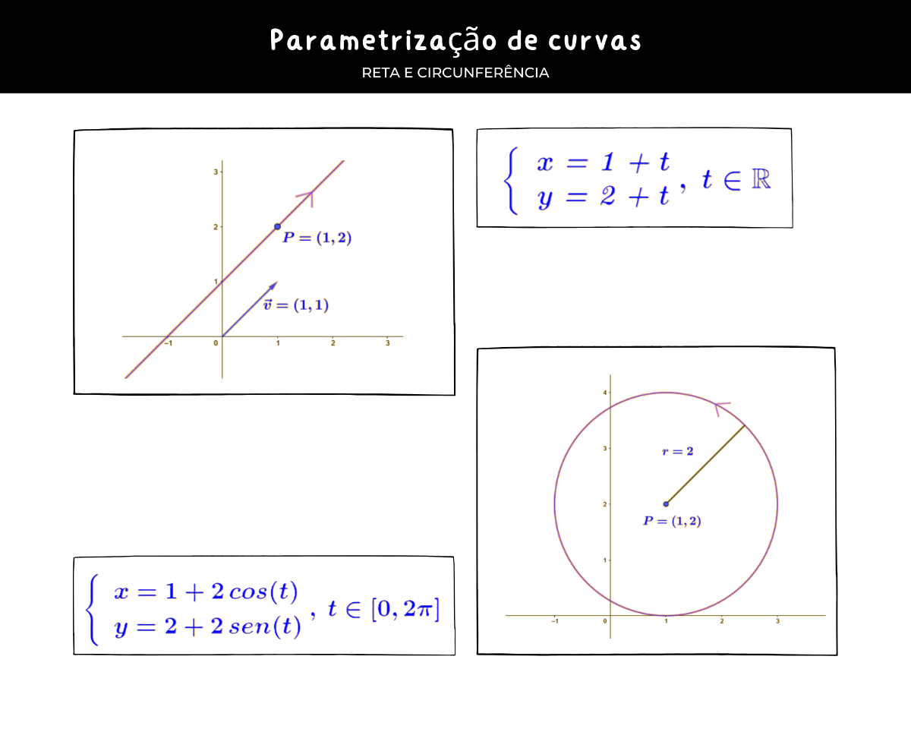

A parametrização de curvas é uma técnica matemática utilizada para representar curvas no plano ou no espaço por meio de funções. Essas funções, chamadas de parametrizações, atribuem a cada ponto da curva um conjunto de coordenadas. A parametrização permite descrever a posição de um ponto em função de um parâmetro, como o tempo ou uma variável independente.
A parametrização de curvas é fundamental em diversas áreas, como física, engenharia, arquitetura e computação gráfica. Ela permite modelar e representar curvas de forma precisa e flexível, facilitando a análise e a manipulação dessas curvas. Além disso, a parametrização é essencial para o estudo de propriedades geométricas das curvas, como a tangente e a curvatura.
Algumas curvas podem ser modeladas através de fórmulas matemáticas simples e outras são um pouco mais complicadas.
Aqui veremos somente as basiconas. Não se preocupe, não!!
